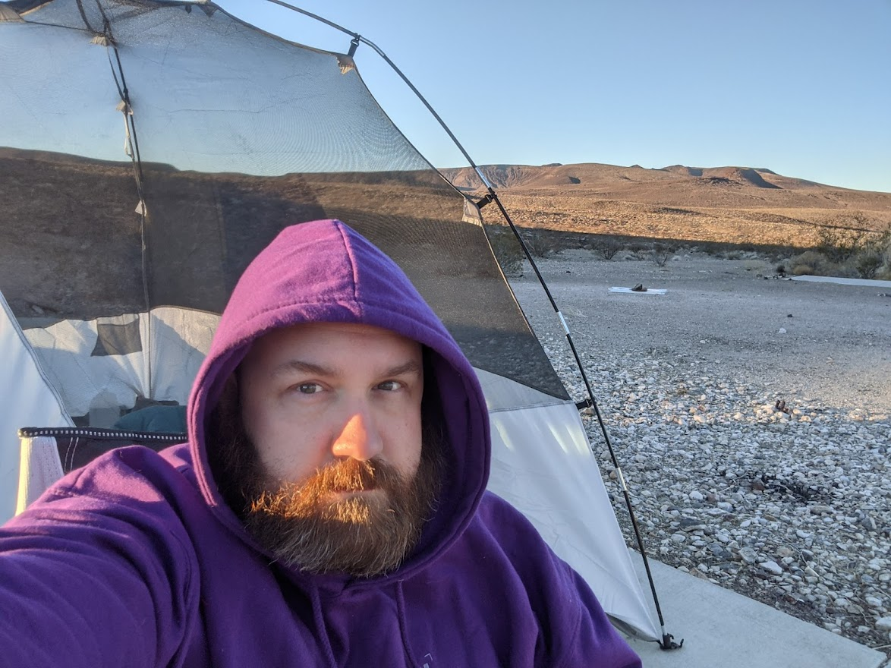
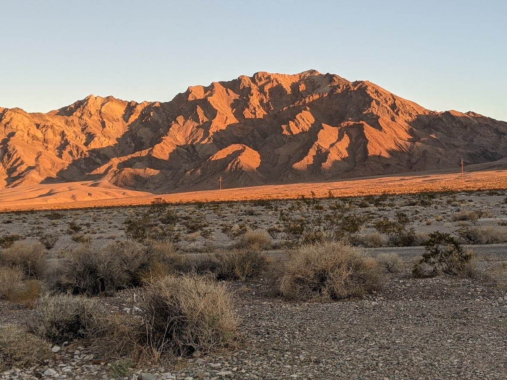
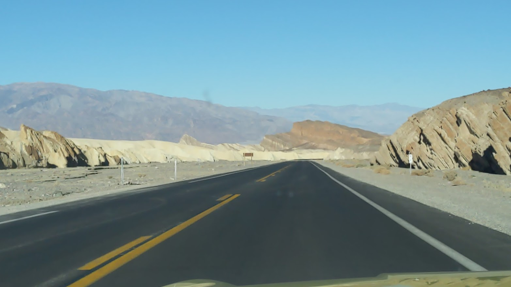
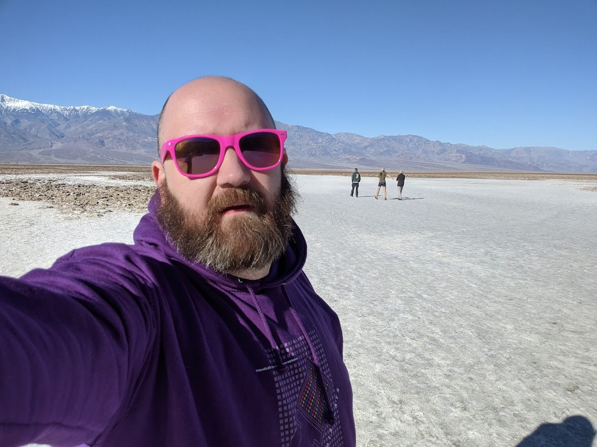
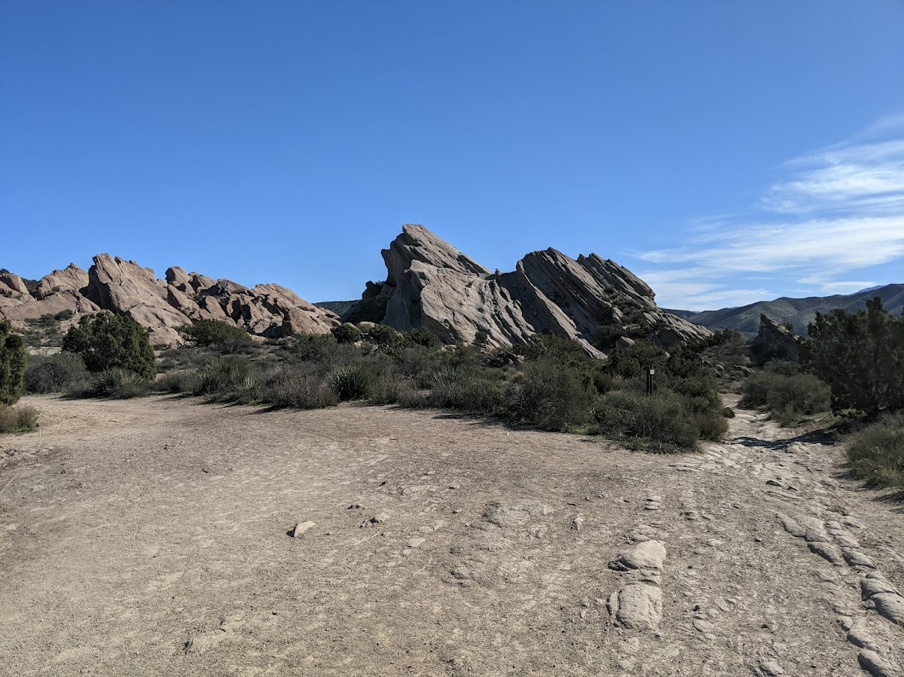

Desert Valley Trip
Welcome to my page documenting a little bit of my trip to Death Valley

Campsite
I found this amazing campsite. It used to be a mobile home site, right outside the bounds of the park. Now it is Bureau of Land Management land and anyone can set up their tent.

Pyramid Peak
As the sun rose in the morning, this lovely vista of Pyramid Peak greeted me.

Desert Road
A nice long stretch. It's at this point that you hope your gas tank is full and your coolant is topped off.

Salt Flat Selfie
What was once and ancient sea bed is now the lowest point on earth. Here I am at ~350 feet below sea level.

Vasquez Rocks
Not in Death Valley, but close enough that I had to visit the famouse Vasquez rocks, most famously seen in Star Trek.
Hover over images for more information
When visiting the desert, be sure to bring your drone